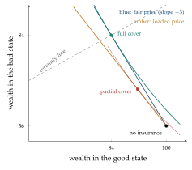

2.5. The demand for insurance#
2.5.1. Two ways to reduce risk#
A risk-averse decision maker would like to reduce the spread of her outcomes. She can do so in two ways. She can learn which state will occur, so that the lottery she faces becomes less uncertain; this is the subject of Bayesian updating and of Chapters 4 and 5. Or she can transfer wealth across states, giving up some wealth in the good state in exchange for more in the bad state. Insurance is the market that does this.
2.5.2. Learning: Bayes’ rule#
Chapters 4 and 5 rely on the first way. Suppose states \(s\) have prior probabilities \(\Pr(s)\), and the decision maker observes a signal \(m\) whose probability depends on the state, \(\Pr(m\mid s)\). Her updated, or posterior, probability of state \(s\) is
provided the denominator, the overall probability of observing \(m\), is positive. If the signal is equally likely in every state, the posterior equals the prior: the signal is uninformative. If it occurs in only one state, the posterior puts probability one on that state. When the denominator is zero, the signal “should not happen” and Bayes’ rule says nothing; Chapter 5 shows that what people believe after such surprises can decide the outcome of a game.
2.5.3. The insurance problem#
The decision maker has wealth \(x\). With probability \(\pi\) (the good state) nothing happens; with probability \(1-\pi\) (the bad state) she loses \(l\in(0,x)\). She can buy cover \(c\ge0\), paid to her in the bad state, at a premium \(p=\gamma c\) paid in both states, where \(\gamma\in(0,1)\) is the price per pound of cover. Her wealth in each state is
State |
Without insurance |
With cover \(c\) |
|---|---|---|
Good (prob. \(\pi\)) |
\(x\) |
\(x-\gamma c\) |
Bad (prob. \(1-\pi\)) |
\(x-l\) |
\(x-l+(1-\gamma)c\) |
She chooses \(c\) to maximise
We call \(c=0\) no insurance, \(0<c<l\) partial insurance and \(c=l\) full insurance: with \(c=l\) her wealth is \(x-\gamma l\) in both states.
Definition 2.7 (Actuarially fair insurance)
Insurance is actuarially fair if the premium equals the expected payout: \(\gamma c=(1-\pi)c\), that is, \(\gamma=1-\pi\).
Interpretation. An insurer with no costs other than claims earns expected profit \(\gamma c-(1-\pi)c\), which is zero exactly when insurance is fair. Fair pricing is what competition among many insurers with no administrative costs would deliver. It has a useful consequence: the decision maker’s expected wealth is \(\pi(x-\gamma c)+(1-\pi)(x-l+(1-\gamma)c)=x-(1-\pi)l\) whatever \(c\) she chooses. Fair insurance changes the risk but not the mean.
2.5.4. Fair insurance: full cover#
Proposition 2.5 (Full insurance at fair prices)
If insurance is actuarially fair and \(u\) is strictly concave and differentiable, the decision maker’s unique optimal cover is \(c^*=l\): she insures fully.
Proof strategy (Proposition 2.5)
Rather than solve the first-order condition and then worry about corners and second-order conditions, sign the derivative \(V'(c)\) (T3). It turns out to be a positive multiple of \(u'(\text{bad-state wealth})-u'(\text{good-state wealth})\), and concavity tells us its sign: positive while the bad state is poorer, zero when the two are equal.
Proof of Proposition 2.5
Step 1: the derivative. With \(\gamma=1-\pi\),
where \(G=x-(1-\pi)c\) and \(B=x-l+\pi c\) are wealth in the good and bad states.
Step 2: sign it. \(G-B=l-c\). If \(c<l\) then \(B<G\); since \(u\) is strictly concave, \(u'\) is strictly decreasing, so \(u'(B)>u'(G)\) and \(V'(c)>0\). If \(c>l\) then \(B>G\) and \(V'(c)<0\). At \(c=l\), \(V'(l)=0\).
Why this step?
The lecture proof says “\(u'\) is strictly increasing” at this step. Concavity makes \(u'\) strictly decreasing; what the argument needs is only that \(u'\) is one-to-one, so the conclusion is unaffected.
Step 3: conclude. \(V\) is strictly increasing on \([0,l]\) and strictly decreasing on \([l,\infty)\), so \(c^*=l\) is the unique maximiser, with no need to check corners or second-order conditions separately.
Interpretation. With fair insurance every level of cover gives the same expected wealth, so the decision maker is choosing among lotteries with the same mean. A risk-averse person picks the one with no risk. In Example 2.2, \(x=100\), \(l=64\), \(\pi=0.75\): fair full cover costs \(0.25\times64=16\) and leaves \(84\) for sure, which is better than the uninsured lottery’s certainty equivalent of \(81\). In fact she would pay up to \(100-81=19\) for full cover: the fair premium \(16\) plus her risk premium \(3\).
2.5.5. Loaded insurance: a deductible#
Real insurers have costs and need profits, so premiums exceed expected payouts: \(\gamma>1-\pi\). The excess is the loading.
Proposition 2.6 (Partial insurance at loaded prices; Mossin 1968)
If \(\gamma>1-\pi\) and \(u\) is strictly concave and differentiable, the optimal cover satisfies \(c^*<l\): the decision maker insures only partly. She buys some cover (\(c^*>0\)) if and only if
Proof of Proposition 2.6
\(V\) is strictly concave in \(c\) (a sum of strictly concave functions of affine functions of \(c\)), so \(V'\) is strictly decreasing. At \(c=l\) wealth is \(x-\gamma l\) in both states, and
So the optimum is below \(l\). Since \(V'\) is decreasing, \(c^*>0\) if and only if \(V'(0)>0\), which is the displayed condition.
Why this step?
The first line of the proof uses strict concavity of \(V\) to turn a statement about the derivative at one point into a statement about where the maximum is. This is T3 again.
Interpretation. At the margin, the last pound of cover costs more than its expected payout. When cover is nearly full the two states are nearly equal, so the decision maker is nearly risk neutral about the remaining risk (point 2 above), and she is not willing to pay a loading for it. So she leaves the last part of the loss uninsured. That uninsured part, \(l-c^*\), is a deductible: loaded insurance predicts deductibles.
Example 2.5 (The running example with loading)
In Example 2.2 let cover cost \(\gamma=0.30\) per pound, against a fair price of \(0.25\). The first-order condition \(\frac{0.3\times0.75}{2\sqrt{100-0.3c}}=\frac{0.7\times0.25}{2\sqrt{36+0.7c}}\) gives \(c^*\approx27.8\): she covers \(27.8\) of the \(64\) loss and bears a deductible of about \(36.2\). She buys no cover at all once \(\gamma\ge5/14\approx0.357\), a loading of about \(43\%\).


Fig. 2.3 Insurance in the space of state-contingent wealth for Example 2.2. Buying cover moves the decision maker from the no-insurance point along a budget line. At the fair price the budget line is tangent to an indifference curve on the certainty line (full cover, Proposition 2.5). At a loaded price the line is flatter and the tangency is below the certainty line (partial cover, Proposition 2.6).#
2.5.6. Interpreting the insurance results#
Why full insurance at fair prices. On the certainty line the slope of every indifference curve is \(-\pi/(1-\pi)\), the odds; this is independent of \(u\). A fair price has exactly that slope, so every risk-averse person, whatever her \(u\), insures fully at fair prices. Only at unfair prices does \(u\) matter for how much she buys.
Who buys more. At a given loaded price, a more risk-averse person buys more cover (Exercise Exercise 2.13).
Insurance as the model for Chapter 3. In Chapter 3 the principal is risk neutral and the agent is risk averse, so the principal is the natural insurer. Full insurance would be optimal, as here, if the agent’s effort were observable. Hidden action is what prevents it.